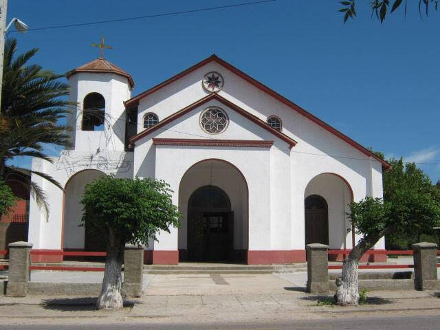

Descubre los
atractivos de Casablanca.
Desde lugares de encuentro y peregrinación hasta paisajes naturales y localidades llenas de historia. Encuentra el rincón que quieres descubrir.
Explorar atractivos
Atractivos de Casablanca.
Muchas formas de descubrir.
Casablanca reúne espacios de valor religioso, cultural, patrimonial y natural. Selecciona el atractivo que más te interese para conocer su historia y características.
La información turística es orientativa. Las condiciones de acceso, horarios y disponibilidad de servicios pueden variar.
Conoce los atractivos
de Quintay.
Explora la historia de la ex ballenera, la vida de la caleta y los paisajes naturales que hacen de Quintay un destino costero único.
La información turística es orientativa. Respeta las áreas naturales y confirma las condiciones de acceso y servicios antes de tu visita.
Casablanca tiene
mucho más por ofrecer.
Continúa explorando el valle, la historia local y los paisajes costeros de Quintay.